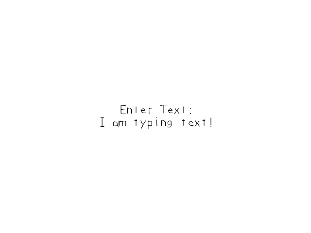

Text Input and Clipboard Handling

Last Updated: Jun 8th, 2025
Whether you want to input names for high scores or custom player names, SDL has text input capabilities you can use. //The quit flag
bool quit{ false };
//The event data
SDL_Event e;
SDL_zero( e );
//Timer to cap frame rate
LTimer capTimer;
//The current input text
std::string inputText{ kStartingText };
//Enable text input
SDL_StartTextInput( gWindow );
Before entering the main loop, we initialize our input text and enable text input with SDL_StartTextInput. Text input does add some overhead so it's a good idea to only enable it when you need it.
//The main loop
while( quit == false )
{
//Start frame time
capTimer.start();
//The rerendering text flag
bool renderText{ false };
//Get event data
while( SDL_PollEvent( &e ) == true )
{
//If event is quit type
if( e.type == SDL_EVENT_QUIT )
{
//End the main loop
quit = true;
}
In our main loop we have a flag to keep track whether we want to rerender our input text texture because rendering it over again every frame as opposed to only when its updated is wasteful.
//Special key input
else if( e.type == SDL_EVENT_KEY_DOWN )
{
//Handle backspace
if( e.key.key == SDLK_BACKSPACE && inputText.length() > 0 )
{
//lop off character
inputText.pop_back();
renderText = true;
}
//Handle copy
else if( e.key.key == SDLK_C && SDL_GetModState() & SDL_KMOD_CTRL )
{
SDL_SetClipboardText( inputText.c_str() );
}
//Handle paste
else if( e.key.key == SDLK_V && SDL_GetModState() & SDL_KMOD_CTRL )
{
//Copy text from temporary buffer
char* tempText{ SDL_GetClipboardText() };
inputText = tempText;
SDL_free( tempText );
renderText = true;
}
}
Here are a couple special key inputs we want to process.
When the user presses backspace we want to remove the last character in the string with
Whent the user presses the
When the user holds ctrl and presses
When the user presses backspace we want to remove the last character in the string with
pop_back. Since this changes the contents of the string, we want to set the update flag.Whent the user presses the
C key and holds down ctrl, we want to copy the text. We get the state of key modifiers using SDL_GetModState. It returns a
SDL_Keymod which is a set of bits that represent things like ctrl keys, shift keys, alt key, etc. The bit we care about is the ctrl bit which is SDL_KMOD_CTRL. To actually copy the text, we call
SDL_SetClipboardText.When the user holds ctrl and presses
V we want to paste the clipboard text input our input text. Set get the clipboard text using SDL_GetClipboardText. We copy this into our input string and remember to
free it after we copied it because SDL_GetClipboardText does return a newly allocated string.
//Special text input event
else if( e.type == SDL_EVENT_TEXT_INPUT )
{
//If not copying or pasting
char firstChar{ static_cast ( toupper( e.text.text[ 0 ] ) ) };
if( !( SDL_GetModState() & SDL_KMOD_CTRL && ( firstChar == 'C' || firstChar == 'V' ) ) )
{
//Append character
inputText += e.text.text;
renderText = true;
}
}
}
When we get a SDL_TextInputEvent, we want to append the character to the input string. First thing we do is get the first
We convert the
char from the text input event. You may be wondering why the text input has an entire
string when it's supposed to get a single character. It's because it's a single UTF-8 character which can be multiple bytes. I recommend looking into how UTF-8 works because it's important for things like localization and memory safety.We convert the
char to uppercase to make the logic case insensitive. We do this so we can check if the user is copying or pasting. If they are not, we append the character from the text input and set the text update flag.
//Rerender text if needed
if( renderText )
{
//Text is not empty
if( inputText != "" )
{
//Render new text
gInputTextTexture.loadFromRenderedText( inputText.c_str(), kTextColor );
}
//Text is empty
else
{
//Render space texture
gInputTextTexture.loadFromRenderedText( " ", kTextColor );
}
}
If the text update flag is set, we rerender the text input texture. We have a special case for when the string is empty, we just render a space so SDL_ttf doesn't get mad at us.
//Fill the background
SDL_SetRenderDrawColor( gRenderer, 0xFF, 0xFF, 0xFF, 0xFF );
SDL_RenderClear( gRenderer );
//Render text textures
gPromptTextTexture.render( ( kScreenWidth - gPromptTextTexture.getWidth() ) / 2.f, ( kScreenHeight - gPromptTextTexture.getHeight() * 2.f ) / 2.f );
gInputTextTexture.render( ( kScreenWidth - gInputTextTexture.getWidth() ) / 2.f, ( kScreenHeight - gPromptTextTexture.getHeight() * 2.f ) / 2.f + gPromptTextTexture.getHeight() );
//Update screen
SDL_RenderPresent( gRenderer );
//Cap frame rate
constexpr Uint64 nsPerFrame = 1000000000 / kScreenFps;
Uint64 frameNs{ capTimer.getTicksNS() };
if( frameNs < nsPerFrame )
{
SDL_DelayNS( nsPerFrame - frameNs );
}
}
//Disable text input
SDL_StopTextInput( gWindow );
}
}
At the end of the main loop we render our prompt and input text textures. Once we exit the main loop, we call SDL_StopTextInput as we are done with text input.
Addendum: Beware of GUIs
Now that you did some basic text input, you may be tempted to write your own GUI library. Don't. For the love of pointers, DON'T.
If over engineering is the number one killer of student projects, GUIs are public enemy number two. The problem with GUIs is that they are not complicated to make (unless you're doing fancy animation effects), but they are very time consuming. GUI programming is something we make interns and junior developers do because it eats up so much of development time and we would rather have senior developers spend their valuable time on more technically complex tasks. The problem is, what is going to impress the people in charge of hiring you is not how much time you spent on something but how technically impressive it is. The opportunity cost of GUIs in portfolio projects is massive because the surprising long amount of time it took to make your text input area is time you could have spent on something more technically complex. This is why I recommend staying away from GUI heavy portfolio projects like RPGs because while your SNES era RPG game might be cool and fun to play, the person who rolled their own graphics or physics engine has better shown their ability to take on complex tasks. If you have your heart set on that RPG, go for it but to realize the risk you are taking.
If you are going to do a GUI heavy project, I recommend using an existing GUI library or engine that already comes with a GUI framework. GUI libraries can be part of a good portfolio project, but it would in reality be closer to a graphics engine. Honestly if you're going to make a GUI library as part of a portfolio project, you should consider it as part of your larger graphics engine.
If over engineering is the number one killer of student projects, GUIs are public enemy number two. The problem with GUIs is that they are not complicated to make (unless you're doing fancy animation effects), but they are very time consuming. GUI programming is something we make interns and junior developers do because it eats up so much of development time and we would rather have senior developers spend their valuable time on more technically complex tasks. The problem is, what is going to impress the people in charge of hiring you is not how much time you spent on something but how technically impressive it is. The opportunity cost of GUIs in portfolio projects is massive because the surprising long amount of time it took to make your text input area is time you could have spent on something more technically complex. This is why I recommend staying away from GUI heavy portfolio projects like RPGs because while your SNES era RPG game might be cool and fun to play, the person who rolled their own graphics or physics engine has better shown their ability to take on complex tasks. If you have your heart set on that RPG, go for it but to realize the risk you are taking.
If you are going to do a GUI heavy project, I recommend using an existing GUI library or engine that already comes with a GUI framework. GUI libraries can be part of a good portfolio project, but it would in reality be closer to a graphics engine. Honestly if you're going to make a GUI library as part of a portfolio project, you should consider it as part of your larger graphics engine.